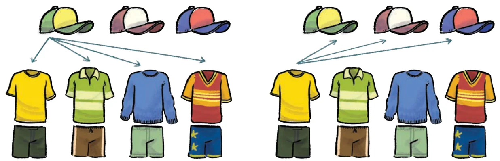
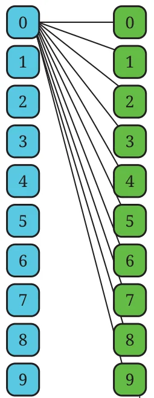
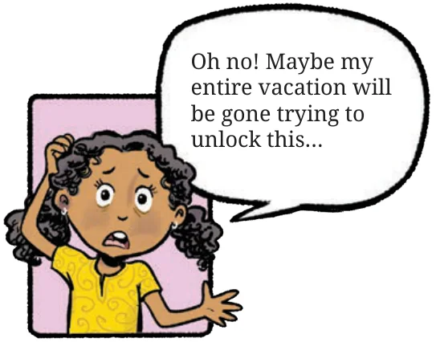

Estu has 4 dresses and 3 caps. How many different ways can Estu combine the dresses and caps?
For each cap, he can choose any of the 4 dresses, so for 3 caps, \(4 + 4 + 4 = 4 \times 3 = 12\) combinations are possible. We can also look at it as — for each dress, Estu can choose any of the 3 caps, so for 4 outfits, \(3 + 3 + 3 + 3 = 3 \times 4 = 12\) combinations are possible.

Roxie has 7 dresses, 2 hats, and 3 pairs of shoes. How many different ways can Roxie dress up?
Hint: Try drawing a diagram like the one above.
Estu and Roxie came across a safe containing old stamps and coins that their great-grandfather had collected. It was secured with a 5-digit password. Since nobody knew the password, they had no option except to try every password until it opened. They were unlucky and the lock only opened with the last password, after they had tried all possible combinations. How many passwords did they end up checking?
If you can’t solve a problem, try to find a simpler version of the problem that you can solve. This technique can come in handy many times.
Instead of a 5-digit lock, let us assume we have a 2-digit lock and try to find out how many passwords are possible.
There are 10 options for the first digit (0 to 9). For each of these, there are 10 options for the second digit (If 0 is the first digit then 00, 01, 02, 03, …, 09 are possible). Therefore the total number of combinations for a 2-digit lock is \(10 \times 10 = 100\).
Now, suppose we have a 3-digit lock. For each of the earlier 100 (2-digit) passwords there are 10 choices for the third digit. So, there are \(100 \times 10 = 1000\) combinations for a 3-digit lock. You can list them all: 000, 001, 002, ….., 997, 997, 999.

How many 5-digit passwords are possible?

Each digit has 10 choices, so a 5-digit lock will have:
\(10 \times 10 \times 10 \times 10 \times 10 = 10^5\)
\(= 1{,}00{,}000\) passwords. This is the same as writing numbers till 99,999 with all 5 digits, i.e., 00000, 00001, 00002, …00010, 00011, …, 00100, 00101, …, 00999, …, 30456, …, 99998, 99999.
Estu says, "Next time, I will buy a lock that has 6 slots with the letters A to Z. I feel it is safer."
How many passwords are possible with such a lock?
Think about how many combinations are possible in different contexts. Some examples are —
- (i)Pincodes of places in India — The Pincode of Vidisha in Madhya Pradesh is 464001. The Pincode of Zemabawk in Mizoram is 796017.
- (ii)Mobile numbers.
- (iii)Vehicle registration numbers.
Try to find out how these numbers or codes are allotted/generated.